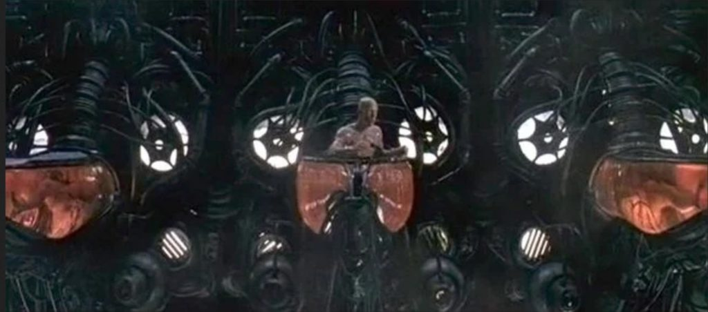

This article consists of my explanation of what our “universe”; the “Reality universe” otherwise known and the MWI, actually is. And while in many ways, it resembles the science fiction movie “The Matrix” it is far more cunning, with far more serious implications. And this article discusses those implications. For here, we will get into the basic overlying general construction of this Prison Complex.
Those of you who are long time readers of MM know what I am talking about about. New comers, well, you’ll probably get lost fairly early on. Sorry about that. this is an advanced subject.
The basic construction of everything
We live inside of an artificial construct.
Being inside of this “thing”; this environment distorts our understanding of reality. It distorts our thinking and our ability to fully comprehend what is actually going on.
We call this place where we live as “our universe”.
And inside of it, we describe the operation of it as “the MWI”. Or multiple world theory.
And that is all we know. We know nothing about what lies outside of our reality. We do not know what lies outside of our universe.
Then it is “The Matrix”?
Well, kind of.
When a beautiful stranger leads computer hacker Neo to a forbidding underworld, he discovers the shocking truth--the life he knows is the elaborate deception of an evil cyber-intelligence.
Most MM readers will know what “The Matrix” is. It is a science fiction movie that says that all of what we know of, see and believe, is an elaborate computer simulation, and we are “plugged into it”.
An overly LARGE Synopsis for those who never watched the movie (they do exist, you know) …
The Matrix begins with a squad of police officers surrounding a building where they believe a computer hacker by the name of Trinity is currently hiding. A mysterious group of “agents” show up and chastise the police commander for not waiting for them before entering the building, due to the dangerous nature of their suspect. We then jump inside where Trinity takes down a squad of police officers before going on the run from the “agents”, across the roof tops of the mysterious city. Trinity eventually makes it to a phone booth, seconds before the phone booth is plowed over by a Mack truck driven by one of the “agents”. When the “agents” examine the wreckage, they do not find Trinity’s body and state that she has escaped, but that they have found the one she is looking for. The film then jump cuts to Thomas Anderson, a computer programmer by day and a computer hacker by night who goes by the name of Neo. Anderson is played by Keanu Reeves in all his Keanu glory. Neo is receiving mysterious computer messages that tell him to “follow the white rabbit”. After encountering someone with a white rabbit tattoo on her body, he follows her to a techno club where he meets a very much alive Trinity. Trinity tells him that Morpheus, an infamous terrorist hacker, wants to meet Neo, and the young hacker is very interested. However, before that meeting can take place, Neo is arrested at work the next day and interrogated/tortured by agents. Fortunately, the agents release Neo (along with a little electronic bug), and Neo is able to keep his date with Morpheus. Morpheus tells Neo that he is living in a dream world, and he can choose to leave it, if Neo so wishes it. Choosing to continue to follow the rabbit hole, Neo takes a red pill, and his reality begins to disintegrate. Neo awakens, naked and weak, in a liquid-filled pod, with cables attached all over his body. He sees thousands of similar tubes all around him before a machine comes down and disconnects him from the pod. Neo is then flushed out with the refuse where he is eventually picked up and brought aboard Morpheus’ hovercraft, the Nebuchadnezzar. Once there, Morpheus begins to explain what the Matrix is. Neo is told that in the 21st century, that the humans of the planet fought a war with machines that had become self aware. As part of this war, the humans had blocked the skies, to prevent the machines from using solar energy. As such, the machines had to find alternative means for the power that they needed to survive, so they created the Matrix. The Matrix is a cyber reality that allows the machines to use human beings as an energy source, or a battery as it is explained in the movie. In the Matrix, humans believe that they are living in the year 1999, and that they are in control of their lives, with no memory of the human/machine world. Morpheus explains that he is responsible for “unplugging” enslaved humans, and returning them to the real world. Morpheus further explains that there is a prophecy that one such freed person will end the war with the machines, and that he believes that Neo is that person. The film then goes into the education of Neo for his adventures in the Matrix world. Because the Matrix is a computer program, Neo is told that they have the ability to do superhuman feats since they can bend the physical laws. However, if a person is killed in the Matrix, they will die in the real world as well. Neo is also warned that everyone who has ever taken on an agent has been killed. Ultimately, Neo is taken by Morpheus to see the Oracle, who will, in theory, confirm whether Neo is indeed the Christ figure of this film. The bad news is that the Oracle tells Neo he is not the one. The worse news is that she tells Neo that Morpheus will die to protect Neo because of his beliefs, unless Neo sacrifices his life for Morpheus. The good news…Neo gets a delicious cookie. As Morpheus’ crew heads back to the extraction point, they are met by policeman and agents, who have been tipped to the crew’s Matrix-world arrival by their own personal Judas, Cypher. Everyone but Morpheus escapes, but Cypher makes it back to the real world hovercraft first. There he begins killing the other members of the crew by unplugging them while their minds are trapped in the Matrix. Before he can kill Trinity or Neo, a computer monitor by the name of Tanks kills Cypher and saves the duo. Morpheus is taken to the agents’ headquarters, where they plan to torture him and interrogate him in order to get the access codes to the mainframe computer in Zion, the humans’ last stronghold in the real world. Neo decides to go back into the Matrix in order to save Morpheus, and Trinity tags along for the ride. The duo encounter overwhelming numbers, but they manage to free Morpheus and make their escape. Morpheus and Trinity are able to make their escape from the Matrix, but Neo becomes trapped when Agent Smith destroys his exit. Neo thinks about running from the agent, but he begins to believe in the prophecy and finds confidence in his abilities. Neo and Agent Smith fight. Spectacularly. But ultimately, Neo has to get out of the Matrix, so he goes on the run trying to find another exit while being pursued by three agents. Tank attempts to lead Neo to an exit and safety, but Agent Smith cuts him off and places several bullets into Neo’s chest, killing the hacker. However, as the agents begin to walk away, Neo resurrects and is now completely aware of his abilities and his power. He stops the bullets from the agents’ guns with a wave of his hand, and destroys Agent Smith by jumping into his “code” and blowing him up. Neo makes his escape from the Matrix, returning to the real world just in time before the hovercraft crew blows up an EMP that would have killed Neo if he had stayed in the Matrix. The film ends with Neo making a call to the Matrix, stating that he knows that they are afraid now. Neo tells them that he will show their human prisoners “a world where anything is possible” before hanging up the phone. Neo then Superman’s off the screen, essentially creating the first cyber-world super hero.
The idea is valid.
Yes. We exist inside of an elaborate simulation.

Except that instead of it being a computer simulation, it is far, far more than that. It is a completely separate and unique “universe” of sorts. The entities that built this simulation did so intentionally and used technologies that appear “God Like” to us.
They created a unique “universe” which is a “bubble” within a much larger universe.
Important Note
And important note: this is NOT a universe that lies outside of the “larger universe”. This is a “bubble universe” that lies inside of the “larger universe”.
As this statement clearly explains (from “Alien Interview”)…
"The Domain exists in such a universe, as well as in the physical universe."
How universes come into being
I’ll let “Alien Interview” explain…
"Before you can understand the subject of history, you must first understand the subject of time. Time is simply an arbitrary measurement of the motion of objects through space. Space is not linear. Space is determined by the point of view of an IS-BE when viewing an object. The distance between an IS-BE and the object being viewed is called "space". Objects, or energy masses, in space do not necessarily move in a linear fashion. In this universe, objects tend to move randomly or in a curving or cyclical pattern, or as determined by agreed upon rules. History is not only a linear record of events, as many authors of Earth history books imply, because it is not a string that can be stretched out and marked like a measuring tool. History is a subjective observation of the movement of objects through space, recorded from the point of view of a survivor, rather than of those who succumbed. Events occur interactively and concurrently, just as the biological body has a heart that pumps blood, while the lungs provide oxygen to the cells, which reproduce, using energy from the sun and chemicals from plants, at the same time as the liver strains toxic wastes from the blood, and eliminates them through the bladder and the bowels. All of these interactions are concurrent and simultaneous. Although time runs consecutively, events do not happen in an independent, linear stream. In order to view and understand the history or reality of the past, one must view all events as part of an interactive whole. Time can also be sensed as a vibration which is uniform throughout the entire physical universe. Airl explained that IS-BEs have been around since before the beginning of the universe. The reason they are called "immortal", is because a "spirit" is not born and cannot die, but exists in a personally postulated perception of "is - will be". She was careful to explain that every spirit is not the same. Each is completely unique in identity, power, awareness and ability. The difference between an IS-BE like Airl and most of the IS-BEs inhabiting bodies on Earth, is that Airl can enter and depart from her "doll" at will. She can perceive at selective depths through matter. Airl and other officers of The Domain can communicate telepathically. Since an IS-BE is not a physical universe entity it has no location in space or time. An IS-BE is literally, "immaterial". They can span great distances of space instantly. They can experience sensations, more intensely than a biological body, without the use of physical sensory mechanisms. An IS-BE can exclude pain from their perception. Airl can also remember her "identity", so to speak, all the way back into the dim mists of time, for trillions of years! She says that the existing collection of suns in this immediate vicinity of the universe have been burning for the last 200 trillion years. The age of the physical universe is nearly infinitely old, but probably at least four quadrillion years since its earliest beginnings. Time is a difficult factor to measure as it depends on the subjective memory of IS-BEs and there has been no uniform record of events throughout the physical universe since it began. As on Earth, there are many different time measurement systems, defined by various cultures, which use cycles of motion, and points of origin to establish age and duration. The physical universe itself is formed from the convergence and amalgamation of many other individual universes, each one of which were created by an IS-BE or group of IS-BEs. The collision of these illusory universes commingled and coalesced and were solidified to form a mutually created universe. Because it is agreed that energy and forms can be created, but not destroyed, this creative process has continued to form an ever-expanding universe of nearly infinite physical proportions. Before the formation of the physical universe there was a vast period during which universes were not solid, but wholly illusionary. You might say that the universe was a universe of magical illusions which were made to appear and vanish at the will of the magician. In every case, the "magician" was one or more IS-BEs. Many IS-BEs on Earth can still recall vague images from that period. Tales of magic, sorcery and enchantment, fairy tales and mythology speak of such things, although in very crude terms. Each IS-BE entered into the physical universe when they lost their own, "home" universe. That is, when an IS-BE's "home" universe was overwhelmed by the physical universe, or when the IS-BE joined with other IS-BEs to create or conquer the physical universe. On Earth, the ability to determine when an IS- BE entered the physical universe is difficult for two reasons: 1) the memory of IS-BEs on Earth have been erased, and 2) IS-BEs arrival or invasion into the physical universe took place at different times, some 60 trillion years ago, and others only 3 trillion.
Immortal Spiritual Beings, which I refer to as "IS-BEs", for the sake of convenience, are the source and creators of illusions. Each one, individually and collectively, in their original, unfettered state of being, are an eternal, all-powerful, all-knowing entity. IS-BEs create space by imagining a location. The intervening distance between themselves and the imagined location is what we call space. An IS-BE can perceive the space and objects created by other IS-BEs. IS-BEs are not physical universe entities. They are a source of energy and illusion. IS- BEs are not located in space or time, but can create space, place particles in space, create energy, and shape particles into various forms, cause the motion of forms, and animate forms. Any form that is animated by an IS-BE is called life. An IS-BE can decide to agree that they are located in space or time, and that they, themselves, are an object, or any other manner of illusion created by themselves or another or other IS-BEs. The disadvantage of creating an illusion is that an illusion must be continually created. If not continually created, it disappears. Continual creation of an illusion requires incessant attention to every detail of the illusion in order to sustain it. A common denominator of IS-BEs seems to be the desire to avoid boredom. A spirit only, without interaction with other IS-BEs, and the unpredictable motion, drama, and unanticipated intentions and illusions being created by other IS-BEs, is easily bored. What if you could imagine anything, perceive everything, and cause anything to happen, at will? What if you couldn't do anything else? What if you always knew the outcome of every game and the answer to every question? Would you get bored? The entire back time track of IS-BEs is immeasurable, nearly infinite in terms of physical universe time. There is no measurable "beginning" or "end" for an IS-BE. They simply exist in an everlasting now. Another common denominator of IS-BEs is that admiration of one's own illusions by others is very desirable. If the desired admiration is not forthcoming, the IS-BE will keep creating the illusion in an attempt to get admiration. One could say that the entire physical universe is made of unadmired illusions. The origins of this universe began with the creation of individual, illusionary spaces. These were the "home" of the IS-BE. Sometimes a universe is a collaborative creation of illusions by two or more IS-BEs. A proliferation of IS-BEs, and the universes they create, sometimes collide or become commingled or merge to an extent that many IS-BEs shared in the co-creation of a universe. IS-BEs diminish their ability in order to have a game to play. IS-BEs think that any game is better than no game. They will endure pain, suffering, stupidity, privation, and all manner of unnecessary and undesirable conditions, just to play a game. Pretending that one does not know all, see all and cause all, is a way to create the conditions necessary for playing a game: unknowns, freedoms, barriers and/or opponents and goals. Ultimately, playing a game solves the problem of boredom. In this fashion, all of the space, galaxies, suns, planets, and physical phenomena of this universe, including life forms, places, and events have been created by IS-BEs and sustained by mutual agreement that these things exist. There are as many universes as there are IS-BEs to imagine, build and perceive them, each existing concurrently within its own continuum. Each universe is created using its own unique set of rules, as imagined, altered, preserved or destroyed by one or more IS-BEs who created it. Time, energy, objects and space, as defined in terms of the physical universe, may or may not exist in other universes. The Domain exists in such a universe, as well as in the physical universe. One of the rules of the physical universe is that energy can be created, but not destroyed. So, the universe will keep expanding as long as IS-BEs keep adding more new energy into it. It is nearly infinite. It is like an automobile assembly line that never stops running and none of the cars are ever destroyed. Every IS-BE is basically good. Therefore, an IS-BE does not enjoy doing things to other IS- BEs which they themselves do not want to experience. For an IS-BE there is no inherent standard for what is good or bad, right or wrong, ugly or beautiful. These ideas are all based on the opinion of each individual IS-BE. The closest concept that human beings have to describe an IS-BE is as a god: all-knowing, all-powerful, infinite. So, how does a god stop being a god? They pretend NOT to know. How can you play a game of "hide and seek" if you always know where the other person is hiding? You pretend NOT to know where the other players are hiding, so you can go off to "seek" them. This is how games are created. You have forgotten that you are just "pretending". In so doing, IS-BEs become entrapped and enslaved inside a maze of their own devising. How does one create a cage, lock one's own self inside the cage, throw away the key, and forget there is a key or a cage, and forget there is an "inside" or "outside", and even forget there is a self? Create the illusion that there is no illusion: the entire universe is real, and that no other universe exists or can be created. On Earth, the propaganda taught and agreed upon is that the gods are responsible, and that human beings are not responsible. You are taught that only a god can create universes. So, the responsibility for every action is assigned to another IS-BE or god. Never oneself. No human being ever assumes personal responsibility for the fact that they, themselves -- individually and collectively -- are gods. This fact alone is the source of entrapment for every IS-BE.
And let’s look at this one statement in detail…
[1] There are as many universes as there are IS-BEs to imagine, build and perceive them, each existing concurrently within its own continuum. [2] Each universe is created using its own unique set of rules, as imagined, altered, preserved or destroyed by one or more IS-BEs who created it. Time, energy, objects and space, as defined in terms of the physical universe, may or may not exist in other universes. [3] The Domain exists in such a universe, as well as in the physical universe.
[1] IS-BE’s create universes at will.
[2] They are complete separate entities that exist within it’s own set of laws, rules and continuum.
[3] The Domain exists in one such universe, AS WELL as “The Physical Universe”.
Since, the Domain Commander was discussing the situation at Roswell he was making s simplification statement that has been pretty much glossed over by most everyone who reads the “Alien Interview” document.
- There is the BIG “parent” universe. This is where The Domain exists. As well as where the “Old Empire” existed.
And there is …
- The Physical Universe. This is a smaller “pocket universe” that sits inside the “BIG parent universe”. It is what we see. It is everything that we physically see, and sense. But it is not the totality of everything. Because this “Physical Universe”; the MWI is the “Old Domain” “Prison Complex”.
The creation of a “artificial” universe within a universe
So this “Prison Planet” is more than just a singular planet with a “fence” around it. It is a planet within it’s own “pocket universe”.
And I can tell you, from MAJestic, that Earth is not the only planet within this “pocket universe”. But there are perhaps four to five other solar systems involved. (Five if you include “our” solar system.)
So it is a very special “pocket universe” within a much larger BIG universe.
This is a very unique universe
Furthermore, there is an elaborate structure that makes this “Prison Complex” unique. It is much more than a simple “electric fence”.
There is a system of recycling IS-BE consciousness’s back and forth from “Prison” to “Parole”. We know this system as …
- Birth
- Living on the earth
- Death
- Going into the light
- Heaven
- Reincarnation
The “Punishment” aspect of our incarceration is in BROWN. The “Parole” / rehabilitation aspect of our incarceration is in BLUE.
Thus we have something else.
We have [1] a huge complex that handles the “punishment” aspect of our incarceration. We call this the “physical reality”, or the MWI. And we have have [2] a massive complex for the “parole” / rehabilitation aspect of our incarceration. This goes by the name of “Heaven”.
There are two massive complexes involved in this “Prison Complex”.
Our “Pocket universe” contains multiple universes
For every imprisoned IS-BE consciousness species, there is an equivalent “Heaven”. And there are many. It’s not only humans. There are horses, elephants, dolphins just to name a few. Each “Heaven” is a universe.
So looking from the outside, you can see that this “pocket universe” is segmented into other universes, and the entire complex, or cluster, of universes is one grand “Prison Complex” that is administered by a complete and ruthless system of control.
Why it is like a geode
A geode is a geological secondary formation within sedimentary and volcanic rocks. Geodes are hollow, vaguely spherical rocks, in which masses of mineral matter (which may include crystals) are secluded.
The crystals are formed by the filling of vesicles in volcanic and sub-volcanic rocks by minerals deposited from hydrothermal fluids; or by the dissolution of syn-genetic concretions and partial filling by the same, or other, minerals precipitated from water, groundwater or hydrothermal fluids.
In our case, the creation of a universe within a universe was a very special construction. In fact, I might argue that it would have been far easier to create a universe outside of our universe, but apparently the rulers of the “Old Empire” as technologically advanced as they were, wanted to create a system that would permanently imprison FOREVER those that they condemned…
…within their universe, and within their geographic territory.
So they FORCED the artificial construction of a unique static “pocket universe” with very strict MWI world-line behaviors. And were any inmate to escape, at the very worst they would escape to geographic terrain of the “Old Empire”. This would not be something that would be possible with a completely separate universe that would lie outside that of the “parent universe”.
And in so escaping, they would be going from a “reality universe” where the laws and rules are one thing, and to a “parent universe” where they are something else entirely different. With a complete amnesia, it would be extremely difficult for an inmate to successfully escape.
What does this understanding provide to us?
This provides us with a great deal of insight regarding the technology of the “Old Empire” and what they could and could not do.
- They could create a “pocket universe”.
- They could not create a total self-contained universe to exile others to.
Thus it is not wonder that The Domain was able to vanquish the “Old Empire”. As members of The Domain are fundamentally IS-BE’s with a class structure that prohibits memory amnesia when occupying a physical body. While the “Old Empire” (apparently) was a societal structure where the occupancy of a physical body allowed or forced memory amnesia.
It also tells us why it is difficult for The Domain to reverse engineer this “Prison Complex”. As this is not a separate universe, but rather a “pocket universe” construction that lies within a “parent universe”.
Where do we inmates fit into the picture?
This region, this “Prison Complex” appears to be just like the “Parent Universe”. So much so, that The Domain entered it, set up a base of operations inside of the “reality universe” totally and completely unaware that it was within a spawned “pocket universe”.
I am confident that The Domain has learned many, many things over the decades and centuries. But I do not believe that mastery of this “pocket universe” can be obtained in the next few years. It might take longer than that. Thus the track that The Domain is on is quite reasonable.
- Set up a system for sentience sorting and rehabilitation.
- Enlist the Mantids towards this goal.
- Assist the”conditional release” of inmates as they acquire “exit visas”.
- Regain control of the entire “Prison Complex” through mastery of the “Pocket Universe”.
- Administer care to the inmates…
With the goals of rescue of the Lost Battalion, and recovery of all memories of all IS-BE’s so incarcerated.
Conclusion
One of the most important fundamentals that an inmate must understand when trying to escape a prison, is the layout of that prison. Well known “prison breaks” all required an understanding of the prison layout, the routines of the guards, and an understanding on what needs to occur; step by step, prior to a successful break-out.
While there are many who are tying to escape one way or the other, I argue that it will be very difficult to do so unless the inmate have a good understanding of the environment where he is incarcerated within.
Given the nature of this “Prison Planet”, it seems reasonable to conclude that a map or an understanding of a path must be laid out for the inmate to extract themselves out of the general population environment. This will not only list the various traps, snares, and tricks that lie along the way, but also the boundaries and mechanisms for the other associated “pocket universes” that lie within this “Prison Complex”. Such as the various heavens, and the very detailed snares.
This article might not seem like much, but it establishes a most fundamental understanding of the limits and the geography of the “Prison Complex”.